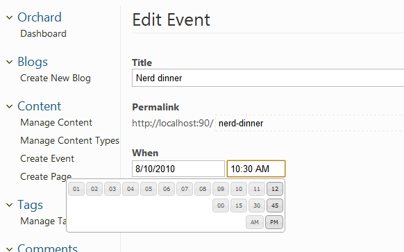
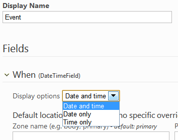

This guide has been marked for review. If you are just getting started with Orchard module development you should read the Getting Started with Modules course first. It will introduce you to building modules with Orchard using Visual Studio Community, a free edition of Visual Studio.
Fields can be used in Orchard to build new content types. Orchard comes with a few built-in field types such as text, date or enumeration, but it is possible to build your own field types that can then be used to build new content types.
This topic will teach you how to add such a new field type. You can find the source code for this tutorial here: http://orcharddatetimefield.codeplex.com/.
We will assume Visual Studio and a full source code enlistment are being used in this topic. It is possible to build this module without it by simply manipulating the csproj file and adding the relevant files in there. Please consult Creating a module with a simple text editor for an example of module building without Visual Studio.
Objectives
Learn the steps to add a new field type to Orchard. The goal is to have a Date and Time editor so that any existing or new Content Type can let the user select a Date or a Time very easily.

Creating a Module
We will create the new field type inside a new Orchard module so that it can be easily distributed. We will use Code Generation feature for that.
Important: Before you can generate the file structure for your module, you need to download, install, and enable the Code Generation feature for Orchard. For more information, see Command-line Code Generation.
Once the Code Generation feature has been enabled, you can type the following codegen command on the Orchard command-line.
codegen module CustomFields /IncludeInSolution:true
This should create a new CustomFields folder under Modules, pre-populated with a few folders and files. For example, you may open the module.txt manifest file and modify it:
Name: CustomFields
AntiForgery: enabled
Author: Me
Website: http://orcharddatetimefield.codeplex.com
Version: 0.6.1
OrchardVersion: 0.8.0
Description: A bunch of custom fields for use in your custom content types.
Features:
CustomFields:
Description: Custom fields for Orchard.
Category: Fields
DateTimeField:
Description: A date and time field with a friendly UI.
Category: Fields
Dependencies: CustomFields, Orchard.jQuery, Common, Settings
We are defining two features here because this module will eventually contain more fields and we want to distinguish between the default feature of the module (which has the same name as the module itself and has to exist in any module) and the date field feature. This also demonstrates categories and dependencies.
Modeling the Field
Let's now create a Fields folder inside of our CustomFields folder and create the following DateTimeField.cs file in there:
using System;
using System.Globalization;
using Orchard.ContentManagement;
using Orchard.ContentManagement.FieldStorage;
using Orchard.Environment.Extensions;
namespace CustomFields.DateTimeField.Fields {
[OrchardFeature("DateTimeField")]
public class DateTimeField : ContentField {
public DateTime? DateTime {
get {
var value = Storage.Get<string>();
DateTime parsedDateTime;
if (System.DateTime.TryParse(value, CultureInfo.InvariantCulture,
DateTimeStyles.AdjustToUniversal, out parsedDateTime)) {
return parsedDateTime;
}
return null;
}
set {
Storage.Set(value == null ?
String.Empty :
value.Value.ToString(CultureInfo.InvariantCulture));
}
}
}
}
The field is defined as a class that derives from ContentField, which gives us a few services for free, such as the storage of the value of the field. The fields will be stored as strings. The conversion of dates to and from strings could be handled automatically, but we are doing it explicitly here to give a good idea of how you would do things for more complex field types.
Creating a View Model
It is good practice (although not mandatory) to create one or several view models that will be used as the model in the admin template that we will use to render instances of our field. Let's create the following DateTimeFieldViewModel.cs file in a new ViewModels folder:
namespace CustomFields.DateTimeField.ViewModels {
public class DateTimeFieldViewModel {
public string Name { get; set; }
public string Date { get; set; }
public string Time { get; set; }
public bool ShowDate { get; set; }
public bool ShowTime { get; set; }
}
}
This not only exposes the date and time as separate properties, it also has some parameters that can be passed into the view to customize the rendering.
Creating Settings for the Field
This flexibility in rendering that we just introduced in the view model can be exposed as settings for the field. This way, administrators can configure fields on the content types they create in order to adapt them to their exact needs.
Create a Settings folder and add the following DateTimeFieldSettings.cs file to it:
namespace CustomFields.DateTimeField.Settings {
public enum DateTimeFieldDisplays {
DateAndTime,
DateOnly,
TimeOnly
}
public class DateTimeFieldSettings {
public DateTimeFieldDisplays Display { get; set; }
}
}
We have defined here an enumeration describing the possible values of our display setting, which is the only setting for the field. The settings class itself is just an ordinary class with one property typed with that enumeration.
Writing the Driver
Exactly like a part, a field has a driver that will be responsible for handling display and editing actions on the field when it's been added to a content type.
Create a Drivers folder and add the following DateTimeFieldDriver.cs:
using System;
using JetBrains.Annotations;
using Orchard;
using Orchard.ContentManagement;
using Orchard.ContentManagement.Drivers;
using CustomFields.DateTimeField.Settings;
using CustomFields.DateTimeField.ViewModels;
using Orchard.ContentManagement.Handlers;
using Orchard.Localization;
namespace CustomFields.DateTimeField.Drivers {
[UsedImplicitly]
public class DateTimeFieldDriver : ContentFieldDriver<Fields.DateTimeField> {
public IOrchardServices Services { get; set; }
// EditorTemplates/Fields/Custom.DateTime.cshtml
private const string TemplateName = "Fields/Custom.DateTime";
public DateTimeFieldDriver(IOrchardServices services) {
Services = services;
T = NullLocalizer.Instance;
}
public Localizer T { get; set; }
private static string GetPrefix(ContentField field, ContentPart part) {
// handles spaces in field names
return (part.PartDefinition.Name + "." + field.Name)
.Replace(" ", "_");
}
protected override DriverResult Display(
ContentPart part, Fields.DateTimeField field,
string displayType, dynamic shapeHelper) {
var settings = field.PartFieldDefinition.Settings
.GetModel<DateTimeFieldSettings>();
var value = field.DateTime;
return ContentShape("Fields_Custom_DateTime", // key in Shape Table
field.Name, // used to differentiate shapes in placement.info overrides, e.g. Fields_Common_Text-DIFFERENTIATOR
// this is the actual Shape which will be resolved
// (Fields/Custom.DateTime.cshtml)
s =>
s.Name(field.Name)
.Date(value.HasValue ?
value.Value.ToLocalTime().ToShortDateString() :
String.Empty)
.Time(value.HasValue ?
value.Value.ToLocalTime().ToShortTimeString() :
String.Empty)
.ShowDate(
settings.Display == DateTimeFieldDisplays.DateAndTime ||
settings.Display == DateTimeFieldDisplays.DateOnly)
.ShowTime(
settings.Display == DateTimeFieldDisplays.DateAndTime ||
settings.Display == DateTimeFieldDisplays.TimeOnly)
);
}
protected override DriverResult Editor(ContentPart part,
Fields.DateTimeField field,
dynamic shapeHelper) {
var settings = field.PartFieldDefinition.Settings
.GetModel<DateTimeFieldSettings>();
var value = field.DateTime;
if (value.HasValue) {
value = value.Value.ToLocalTime();
}
var viewModel = new DateTimeFieldViewModel {
Name = field.Name,
Date = value.HasValue ?
value.Value.ToLocalTime().ToShortDateString() : "",
Time = value.HasValue ?
value.Value.ToLocalTime().ToShortTimeString() : "",
ShowDate =
settings.Display == DateTimeFieldDisplays.DateAndTime ||
settings.Display == DateTimeFieldDisplays.DateOnly,
ShowTime =
settings.Display == DateTimeFieldDisplays.DateAndTime ||
settings.Display == DateTimeFieldDisplays.TimeOnly
};
return ContentShape("Fields_Custom_DateTime_Edit",
() => shapeHelper.EditorTemplate(
TemplateName: TemplateName,
Model: viewModel,
Prefix: GetPrefix(field, part)));
}
protected override DriverResult Editor(ContentPart part,
Fields.DateTimeField field,
IUpdateModel updater,
dynamic shapeHelper) {
var viewModel = new DateTimeFieldViewModel();
if (updater.TryUpdateModel(viewModel,
GetPrefix(field, part), null, null)) {
DateTime value;
var settings = field.PartFieldDefinition.Settings
.GetModel<DateTimeFieldSettings>();
if (settings.Display == DateTimeFieldDisplays.DateOnly) {
viewModel.Time = DateTime.Now.ToShortTimeString();
}
if (settings.Display == DateTimeFieldDisplays.TimeOnly) {
viewModel.Date = DateTime.Now.ToShortDateString();
}
if (DateTime.TryParse(
viewModel.Date + " " + viewModel.Time, out value)) {
field.DateTime = value.ToUniversalTime();
}
else {
updater.AddModelError(GetPrefix(field, part),
T("{0} is an invalid date and time",
field.Name));
field.DateTime = null;
}
}
return Editor(part, field, shapeHelper);
}
protected override void Importing(ContentPart part, Fields.DateTimeField field,
ImportContentContext context) {
var importedText = context.Attribute(GetPrefix(field, part), "DateTime");
if (importedText != null) {
field.Storage.Set(null, importedText);
}
}
protected override void Exporting(ContentPart part, Fields.DateTimeField field,
ExportContentContext context) {
context.Element(GetPrefix(field, part))
.SetAttributeValue("DateTime", field.Storage.Get<string>(null));
}
}
}
Let's enumerate a few things we're doing in this code in order to explain how it works.
The driver derives from ContentFieldDriver<DateTimeField> in order to be recognized by Orchard and to give strongly-typed access to the field value from the driver's code.
We start by injecting the localizer dependency (the T property) so that we can create localizable strings throughout the code.
The static GetPrefix method is a conventionally defined method that is used to create unique column names in the database for instances of the field type.
We then have two actions, Display and Editor, which start by fetching the settings and value for the field and build shapes out of them.
Note: The
UsedImplicitlyattribute is only here to suppress a warning from Resharper. It could be removed without much harm.
The shapeHelper object provides some helper methods to create shapes, two of which can be seen in action here.
The second Editor method is the one that is called when the admin form is submitted. Its job is to map the submitted data back into the field and then to call the first Editor method to render the editor on the screen again.
Writing the Templates
We need to write the views that will determine how our field is represented in admin and front-end UI.
Create a Fields and an EditorTemplates directory under Views. Then create another Fields directory under EditorTemplates. In Views/Fields, create the following Custom.DateTime.cshtml:
<p class="text-field"><span class="name">@Model.Name:</span>
@if(Model.ShowDate) { <text>@Model.Date</text> }
@if(Model.ShowTime) { <text>@Model.Time</text> }
</p>
This code renders the name of the field, a colon and then the date and time according to the field's configuration.
Now create a file of the same name under Views/EditorTemplates/Fields with the following contents:
@model CustomFields.DateTimeField.ViewModels.DateTimeFieldViewModel
@{
Style.Include("datetime.css");
Style.Require("jQueryUI_DatePicker");
Style.Require("jQueryUtils_TimePicker");
Style.Require("jQueryUI_Orchard");
Script.Require("jQuery");
Script.Require("jQueryUtils");
Script.Require("jQueryUI_Core");
Script.Require("jQueryUI_Widget");
Script.Require("jQueryUI_DatePicker");
Script.Require("jQueryUtils_TimePicker");
}
<fieldset>
<label for="@Html.FieldIdFor(m => Model.Date)">@Model.Name</label>
@if ( Model.ShowDate ) {
<label class="forpicker"
for="@Html.FieldIdFor(m => Model.Date)">@T("Date")</label>
<span class="date">@Html.EditorFor(m => m.Date)</span>
}
@if ( Model.ShowTime ) {
<label class="forpicker"
for="@Html.FieldIdFor(m => Model.Time)">@T("Time")</label>
<span class="time">@Html.EditorFor(m => m.Time)</span>
}
@if(Model.ShowDate) { <text>@Html.ValidationMessageFor(m=>m.Date)</text> }
@if(Model.ShowTime) { <text>@Html.ValidationMessageFor(m=>m.Time)</text> }
</fieldset>
@using(Script.Foot()) {
<script type="text/javascript">
$(function () {
$("#@Html.FieldIdFor(m => Model.Date)").datepicker();
$("#@Html.FieldIdFor(m => Model.Time)").timepickr();
});
</script>
}
This template is registering a few styles and scripts (note that if other parts register the same files, they will still be rendered only once). Then, it defines the editor as a date picker and a time picker according to the field's configuration. The fields are regular text boxes that are unobtrusively enriched by date and time pickers using jQuery UI plug-ins.
To specify the order and location where these templates will be rendered within the composed page, we need to add a placement.info file into the root of the module's directory:
<Placement>
<Place Fields_Custom_DateTime_Edit="Content:2.5"/>
<Place Fields_Custom_DateTime="Content:2.5"/>
</Placement>
Managing the Field Settings
We are not quite done yet. We still need to take care of managing and persisting the settings for the field.
Add the following DateTimeFieldEditorEvents.cs file to the Settings folder:
using System.Collections.Generic;
using Orchard.ContentManagement;
using Orchard.ContentManagement.MetaData;
using Orchard.ContentManagement.MetaData.Builders;
using Orchard.ContentManagement.MetaData.Models;
using Orchard.ContentManagement.ViewModels;
namespace CustomFields.DateTimeField.Settings {
public class DateTimeFieldEditorEvents : ContentDefinitionEditorEventsBase {
public override IEnumerable<TemplateViewModel>
PartFieldEditor(ContentPartFieldDefinition definition) {
if (definition.FieldDefinition.Name == "DateTimeField") {
var model = definition.Settings.GetModel<DateTimeFieldSettings>();
yield return DefinitionTemplate(model);
}
}
public override IEnumerable<TemplateViewModel> PartFieldEditorUpdate(
ContentPartFieldDefinitionBuilder builder, IUpdateModel updateModel) {
var model = new DateTimeFieldSettings();
if (builder.FieldType != "DateTimeField") {
yield break;
}
if (updateModel.TryUpdateModel(
model, "DateTimeFieldSettings", null, null)) {
builder.WithSetting("DateTimeFieldSettings.Display",
model.Display.ToString());
}
yield return DefinitionTemplate(model);
}
}
}
This is the equivalent of a driver, but for field settings. The first method gets the settings and determines the template to render, and the second updates the model with the values from the submitted form and then calls the first.
The editor template for the field is defined by the following DateTimeFieldSettings.cshtml that you should create in a new DefinitionTemplates folder under Views:
@model CustomFields.DateTimeField.Settings.DateTimeFieldSettings
@using CustomFields.DateTimeField.Settings;
<fieldset>
<label for="@Html.FieldIdFor(m => m.Display)"
class="forcheckbox">@T("Display options")</label>
<select id="@Html.FieldIdFor(m => m.Display)"
name="@Html.FieldNameFor(m => m.Display)">
@Html.SelectOption(DateTimeFieldDisplays.DateAndTime,
Model.Display == DateTimeFieldDisplays.DateAndTime,
T("Date and time").ToString())
@Html.SelectOption(DateTimeFieldDisplays.DateOnly,
Model.Display == DateTimeFieldDisplays.DateOnly,
T("Date only").ToString())
@Html.SelectOption(DateTimeFieldDisplays.TimeOnly,
Model.Display == DateTimeFieldDisplays.TimeOnly,
T("Time only").ToString())
</select>
@Html.ValidationMessageFor(m => m.Display)
</fieldset>
This template creates a label for the setting and then a drop-down that enables the site administrator to pick one of the options for the setting.
Updating the Project File
If you are using Visual Studio, you should skip this section as your project file has already been updated, provided you saved all (CTRL+SHIFT+S). Otherwise, in order for the Orchard dynamic compilation engine to be able to pick up our new module's cs files, we need to add them to the CustomFields.csproj file.
Find the <Content Include="Properties\AssemblyInfo.cs"/> line in CustomFields.csproj. If you look at it then you will see that this is inside an <ItemGroup> element. After that end </ItemGroup> for that section add in this code:
<ItemGroup>
<Compile Include="Drivers\DateTimeFieldDriver.cs" />
<Compile Include="Fields\DateTimeField.cs" />
<Compile Include="Settings\DateTimeFieldEditorEvents.cs" />
<Compile Include="Settings\DateTimeFieldSettings.cs" />
<Compile Include="ViewModels\DateTimeFieldViewModel.cs" />
</ItemGroup>
Adding the Style Sheet
Create a Styles directory and create the following datetime.css:
html.dyn label.forpicker {
display:none;
}
html.dyn input.hinted {
color:#ccc;
font-style:italic;
}
.date input{
width:10em;
}
.time input {
width:6em;
}
Using the Field
In order to be able to use the new field, you must first make sure that the Orchard.ContentTypes feature is enabled. Also enable our new DateTimeField feature under Fields. Once it is, you can click on Manage content types in the admin menu. Click Create new type and give it the name "Event". Click Add next to fields and type in "When" as the name of the field. Select our new DateTime field type as the type of the field.
Now in the type editor, you should see our new When field, and you should be able to deploy its settings section by clicking the ">" on its left:
 We chose to keep both date and time displayed. The settings for the field are also the opportunity to determine where the field will appear on the front end if you want to override the defaults. Let's skip that for now. Add the Route part so that our events can have a title, then hit Save.
We can now add a new event by clicking Create Event in the admin menu. The editor that gets created for us has a when field with nice date and time pickers:
Create an event and save it. You can now view it on the site:

Getting the Code
Download the code here: CustomFields.zip. The code is also hosted on http://orcharddatetimefield.codeplex.com/.